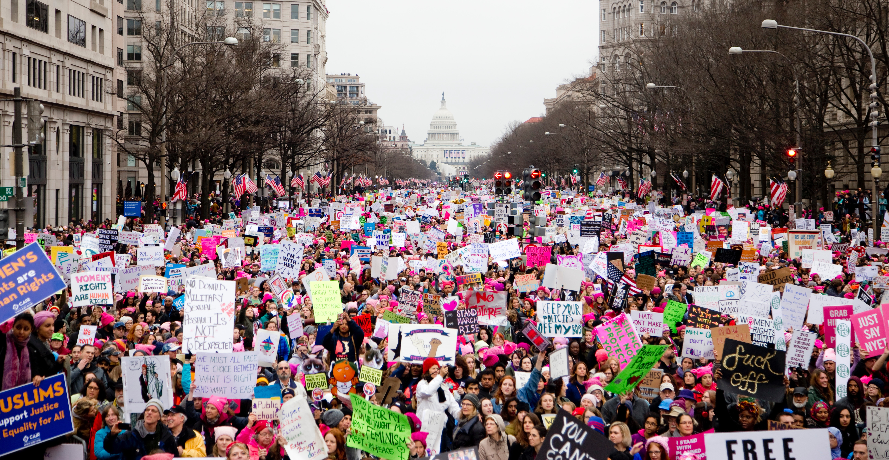

Donald Trump is inaugurated as the 45th President of The United States of America.
24 hours after Donald Trump is elected President of The United States of America, millions of people from around the world congregated to march in support of equality for all. The Women's March movement is aimed at dismantling systems of oppression for various minority groups such as Women's Rights, Immigrant Rights, LGBTQIA rights, etc. The Women's March in 2017 was the largest coordinated protest in U.S. history and one of the largest in world history. 
When Senate Republicans tried to quiet Sen. Elizabeth Warren (D-Mass.) during a long critique criticizing Donald Trump's nominee for attorney general, Sen. Jeff Sessions, Warren refused to be quiet. Her tenacity and refusal to comply prompted Senate Majority Leader Mitch McConnell’s comment: “She was warned. She was given an explanation. Nevertheless, she persisted,” which inadvertently set off a viral meme of feminist resistance.
After experiencing sexual harrassment and gender inequality in the workplace, former engineer Susan Fowler writes a blog post about the experiences and struggles she faced while working at Uber. She recounts the implicit lack of response or help she recieved from HR, as well as the blatant injustice she dealt with on a daily basis. This post inadvertently unmasked many of the challenges women are faced with when working in the tech industry due to its highly male dominated nature.
A memo written by a Google senior engineer that discussed what he believed to be the company’s “ideological echo chamber” specifically in regards to gender differences gets published and goes viral. He is fired by Google, however the memo sparks outrage across the country.
Actress Alyssa Milano sparks a movement with a hashtag on Facebook and Twitter. The #metoo movement encourages both women and men to share their stories of workplace harassment in hopes of shedding light on the signifance of the problem across all industries.
If you’ve been sexually harassed or assaulted write ‘me too’ as a reply to this tweet. pic.twitter.com/k2oeCiUf9n
#TIMESUP movement was launched by women in the entertainment industry as a unified call for change for women across all industries. TIME’S UP focuses on the systemic inequality and injustices in the workplace that have kept underrepresented groups from reaching their full potential. During the award's season for the entertainment industry, many women wore white roses and black outfits in support of the #TIMESUP movement.